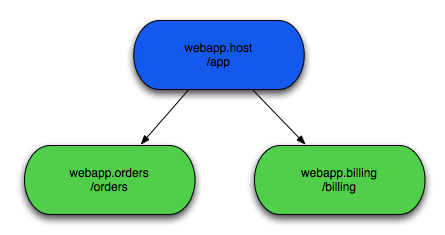

| Prototypes | ||
|---|---|---|
|
|
|
|
| Future Features | Updating This Document | |
Snaps is a prototype also from dm Server where it was known as Slices. It aims to give you the full benefit of a dynamic and modular OSGi environment for your web applications by allowing you to spread the front end across many bundles, or Snaps. The Snaps source code is available from one of our Git repos listed on the 'Source' tab. Thanks to Patsy Phelan and Dmitry Sklyut for comments on this content.
A Snap is an OSGi Web Application Bundle that is responsible for handling requests for part of the total application. Requests are served up to each snap depending on what part of the context path the snap has registered to handle. Each Snap will be given requests by a host bundle. A Host bundle is also just a normal web application bundle with filter configured to dispatch certain requests to any registered Snaps.

The host will handle requests to '/app/*' while '/app/orders' and '/app/billing' will be dispatched to the relevant Snap bundle.
Snaps is different from other technologies such as Web Fragments in that it much more decoupled and takes advantage of OSGi to allow for the dynamic composition of a web app at runtime. The lifecycle of the Snap and the Host is completely decoupled. This is due to the services like approach. Web Fragments are static and much more closely coupled, they share the same classpath and the modularity it offers is only at development time. This extra decoupling means that snaps can be developed in isolation from the host application, even after the host application has be released.
Category:Virgo Category:EclipseRT
See OSGi Explorer.
|
|

|
|
| Future Features | Updating This Document |